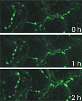
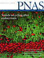
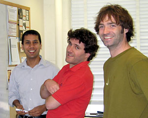

News Archives : 2005 : Vesicle Recycling After Endocytosis
by Venkatesh Murthy
April 27, 2005
Communication between neurons occurs at specialized structures called synapses, where neurotransmitters released by synaptic vesicles activate receptors on the postsynaptic neuron to elicit chemical and electrical signals. Once used, synaptic vesicles are recycled locally for future release of neurotransmitter – such local recycling is critical for keeping up synaptic function because synapses are typically far away from neuronal cell bodies that produce new vesicles. The exact mechanisms in the complex process of synaptic vesicle recycling are not known. In this study, Li and colleagues used a fluorescent label targeted to synaptic vesicles to examine the fate of synaptic vesicles after they undergo exocytosis. They find that, contrary to a popular view, vesicles that fuse to release transmitter get out of the way to allow existing reserve vesicles to take their place. Used vesicles are then recaptured at leisure and become release competent over the next few minutes.
|
 Figure 2 |
For their experiments, the authors generated transgenic mice that express the fluorescent reporter called synaptopHluorin in the presynaptic terminals of neurons. They used a genetic strategy popularized by MCB professor Joshua Sanes that can highlight a sparse population of neurons within a forest of other neurons (Feng et al. Neuron, 28:41-51). For many experiments, labeling every neuron in a region is counterproductive since the fluorescence from all the synapses merge together and become indistinguishable. But if only a few representative neurons are labeled, the individual synapses (which are about a micron in size) become visible and can be studied in detail. The authors made several lines of mice with strikingly different patterns of expression (Figure 1).
Although many "fluorescent" mice for brain research have been made previously, none have the proven ability to report functional synaptic activity in a wide range of brain sites. In the mice made by the authors, synaptic activity could be imaged in tissue explants of hippocampus, a region of the brain implicated in many forms of learning and memory. Individual synapses could be imaged repeatedly in living, breathing animals using a multiphoton microscope (Figure 2 shows synapses in the olfactory bulb). In their paper, however, the authors used a simpler, more accessible preparation to investigate the cell biology of vesicle recycling. Specifically, the authors asked whether newly endocytosed vesicles were locally and immediately reused for another round of neurotransmitter release, or whether they were mobilized to the back of the vesicle queue for later reuse (forming part of a pool of vesicles known as the reserve pool). Using both fluorescence imaging of spH responses and dual patch-clamp recordings, the authors found that once a vesicle fuses with the plasma membrane it is subsequently retrieved and taken to the reserve pool. Both excitatory and inhibitory terminals behaved similarly, suggesting a common mechanism for recycling across different types of synapses.
Future studies in the lab will examine the properties of identified synapses in intact mouse brain, and how they are altered by experience. The authors, who had no prior experience in mouse genetics, benefited greatly from the Genome Manipulation Facility at Harvard University, which allowed them to construct these important transgenic mice.
|
Paper published in The Proceedings of the National Academy of Sciences |
 |
|
 Four of six co-authors, from L to R: Venki Murthy, Juan Burrone, William Tyler and Zhiying Li |
{kind=link}
{kind=link}